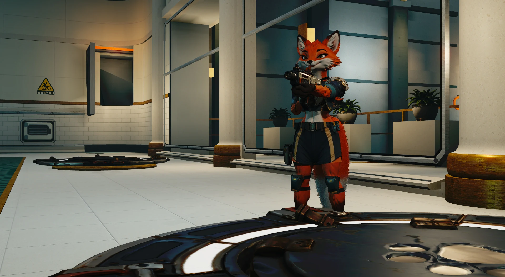
01 / RECLAMATION & RESCUE
Qind
Qompany.
Eight adult professionals. A shared arsenal. Bring the power back, keep the squad supplied and make every magazine count.
Meet your coworkers ↙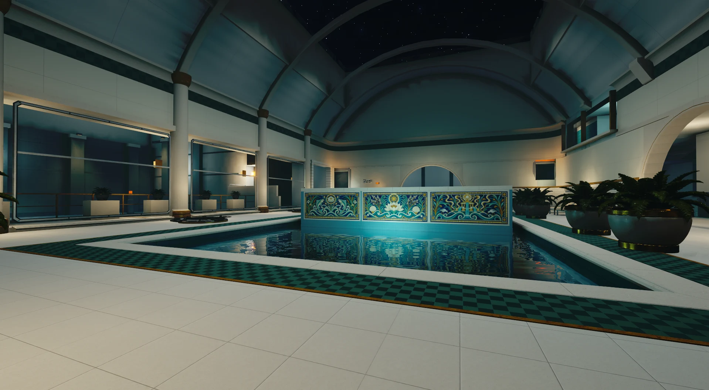
MULTIPLAYER FPS × TEAM STRATEGY
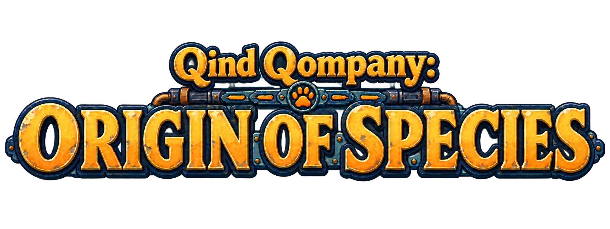
Clock in.
Take back the habitat.
A reclamation crew. A machine ecology.
Two teams. One commander on each side.
Every room is part of the plan.
These places were built for people.
The maintenance system has other plans.
THE SHIFT / HOW A MATCH WORKS
Fight from the floor. Command from above. Build the network that lets your team push further.
Origin of Species is a multiplayer FPS and RTS hybrid. Field players capture ground, protect resources and attack enemy infrastructure. One commander on each team directs the fight, places structures and invests in research.
Win by destroying the other side’s viable command bases. Your weapons matter. So do the supply line behind you, the route nobody is watching and the teammate keeping the lights on.
Quick Join finds an available server. The browser lets you choose one. Enter its ready room and join a side.
Take command sites, secure supply and connect your infrastructure. Protect what your team builds.
Research equipment and chassis. Open a new approach. Commit together when the opportunity arrives.

01 / RECLAMATION & RESCUE
Eight adult professionals. A shared arsenal. Bring the power back, keep the squad supplied and make every magazine count.
Meet your coworkers ↙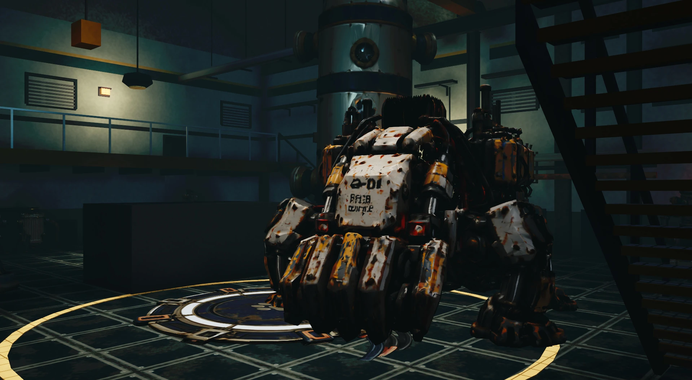
02 / MANUFACTURED MAINTENANCE ECOLOGY
Five purpose-built chassis. One connected Seedweb. Crawl, fly, mend and force a passage through the habitat you were made to maintain.
Meet the machinery ↙THREE HABITATS / THREE DIFFERENT FRONTS
Public spaces out front. Working machinery behind the walls. Learn the places, then learn what the other side can do with them.
DESALINATION / THERMAL SPA
A civic retreat wrapped around the machinery that keeps its water moving. Cross the pools, take the galleries and follow the service routes beneath the polished surface.
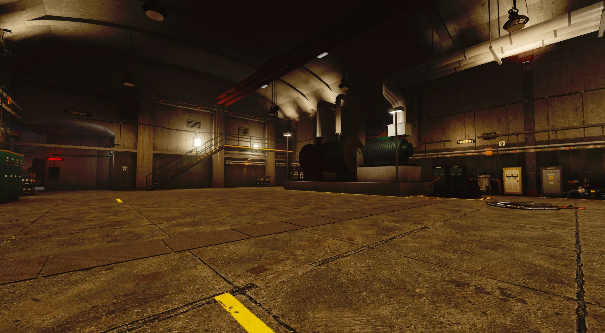
02 / CINDERWELL STATIONGEOTHERMAL / POWER INFRASTRUCTURE
Heavy turbines, control rooms and the fissures that feed them. A warm industrial interior with dense machinery, long service approaches and a very different rhythm from Tideglass.
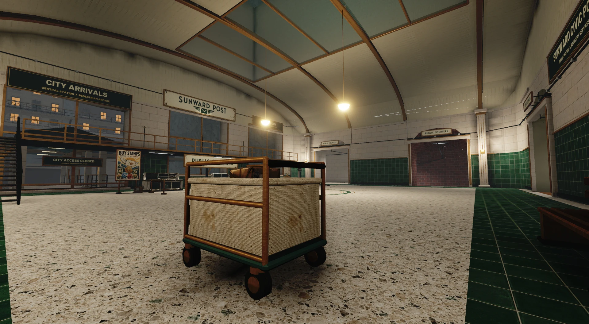
03 / SUNWARD EXCHANGECIVIC POST / CLIFFSIDE AIRMAIL TERMINAL
Buy a stamp upstairs. Sort a mountain of parcels behind the counter. Beyond the public lobby, conveyors and freight floors lead to an aircraft hangar excavated into the mountain.
All environment images above are native game captures. Maps and balance continue to develop.
PERSONNEL / QIND QOMPANY
Your crew identity is dealt at deployment and each new life. Everyone shares equipment access; each brings a different body, strengths and specialist skill.
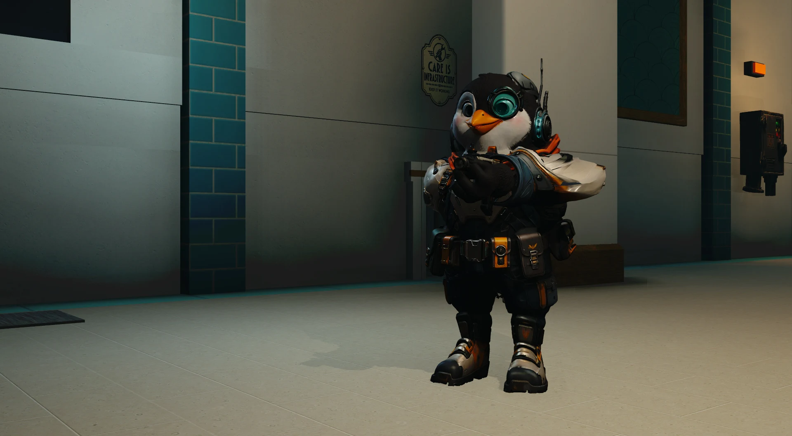
Rescue / belly slide
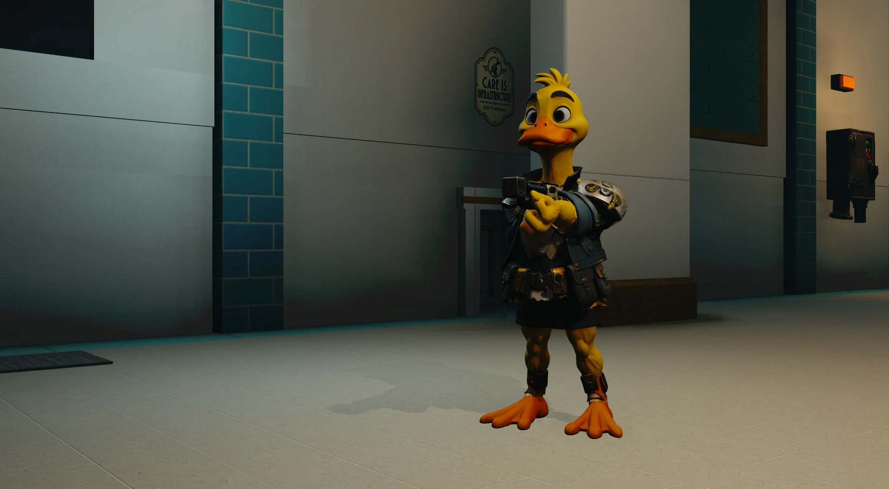
Warning / decoy
Tempo / overclock
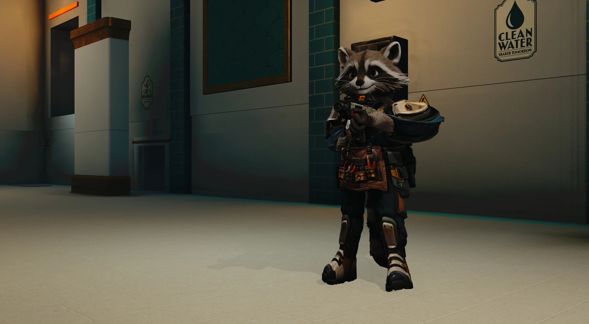
Supply / spare ammunition
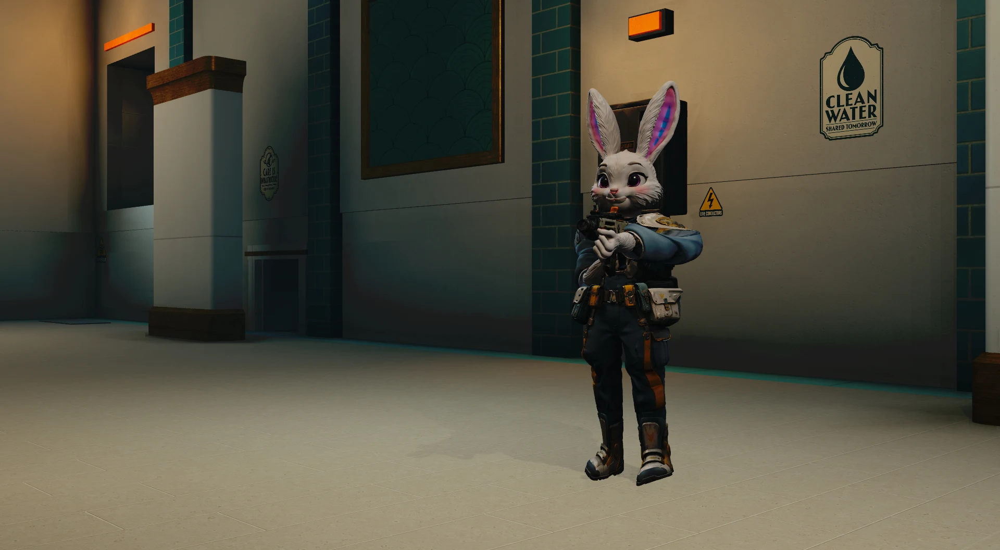
Protection / cushion field
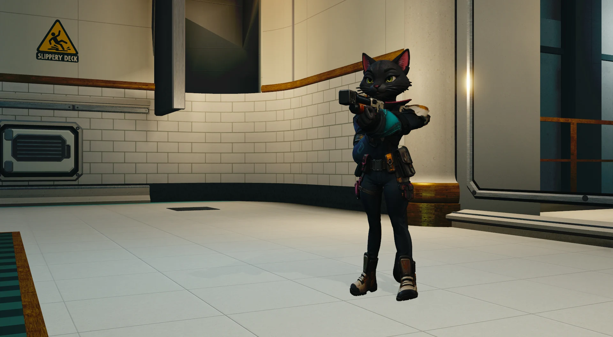
Reconnaissance / precision
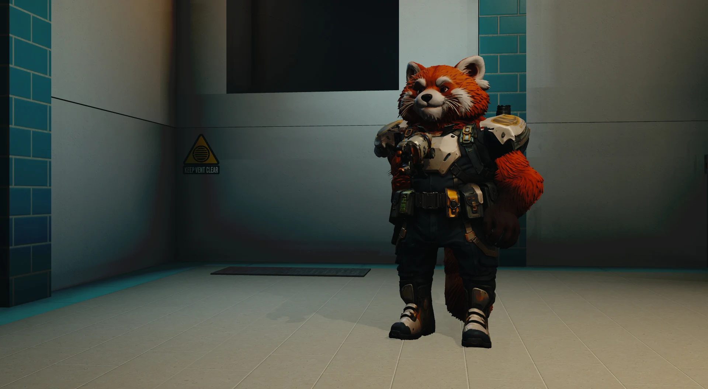
Repair / Arc shears
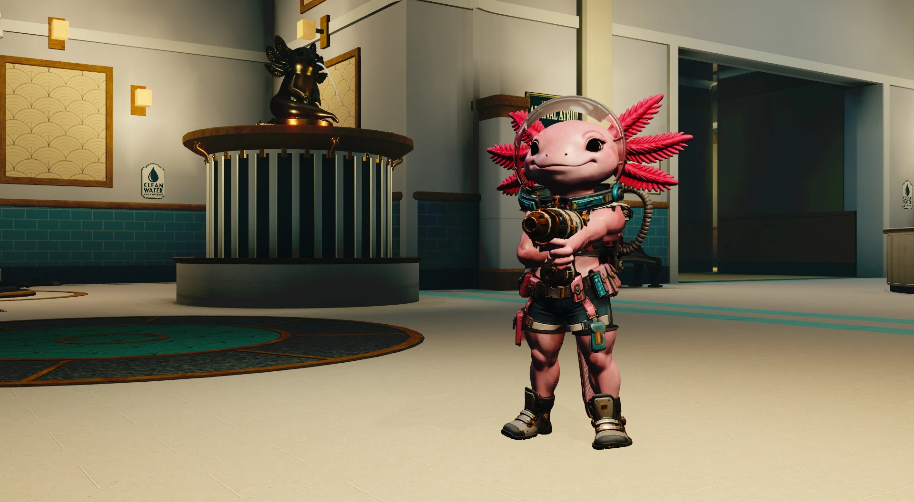
Recovery / support
Current native models and equipment, photographed in Tideglass. Open a personnel file for abilities and field notes.
FABRICATION / CYBER CREEP
The Custodian treats independent occupants as faults. Its bodies are manufactured tools: cable, ceramic, clamps and machinery. Each chassis gives the network a different way through.
LATEST TRAILER / THREE STATIONS
Three stations. Eight crew. Five machine chassis. Watch the latest trailer, then meet the two factions in the earlier films. Captured in the game during development.
Latest trailer · 3:00 · Tideglass Baths, Cinderwell Station & Sunward Exchange
Qind Qompany / the people keeping the habitat alive
Cyber Creep / a system that always has another body
DEVELOPMENT / PRIVATE TESTING
Origin is being prepared for private multiplayer testing on Windows and Linux.
The Steam release is planned. There is no public store page or release date yet. Early sessions focus on joining matches, hardware compatibility, performance and how these maps play with real people.
FROM THE DEVELOPER
Natural Selection and Natural Selection 2 were a huge part of my formative years.
I played from NS 1.04 onward. On the old Unknown Worlds forums I went by Caboose-TPF-, with TPF standing for “team-play first.” I was deeply involved in that community, made custom maps, wrote thousands of forum posts, and briefly served as an internal tester for NS2.
I have a great deal of respect for Unknown Worlds and for the games and community they built. The shared decisions, the commander’s trust in the squad, and the way a good map could shape a whole match have stayed with me.
Qind Qompany comes from that love. It shares a genre and some familiar strategic ideas, while building its own world, characters, machine ecology and equipment. I think of that relationship in the wider lineage of games such as Gloom and the influence of the Alien franchise: recognizable inspirations, expressed through a distinct game.
A personal tribute to the joy of playing as a team.
Qind Qompany is an independent Sloom Game Studio project. It is not affiliated with or endorsed by Unknown Worlds. Visit Unknown Worlds.